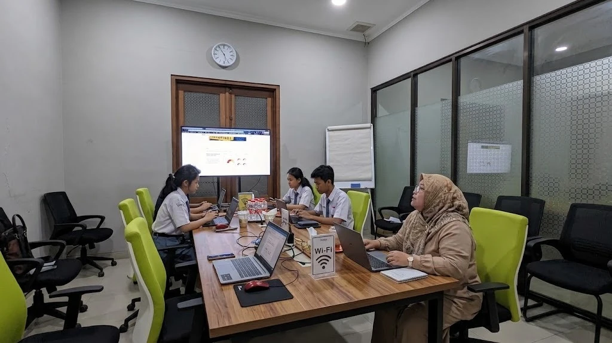
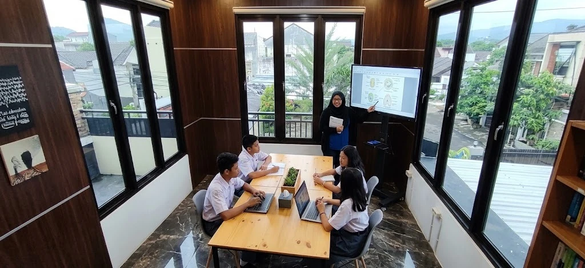

JEJAK ALUMNI
Diterima di pilihan pertama
Dokumentasi percakapan alumni pendampingan Inersia.
PTN Small Class 2027 • Malang • Surabaya • Bandung

INERSIA PTN SMALL CLASS 2027
Dimulai dari Asesmen PTN Gratis di Rumah. Inersia memetakan posisi awal siswa lalu menjalankan program kelas maksimal 5 siswa, tutor lulusan ITB terseleksi, latihan personal, evaluasi progres, tryout, dan pendampingan sampai ujian.
*Berlaku sesuai ketentuan Program Jaminan. Jika siswa memenuhi seluruh syarat tetapi tetap tidak masuk PTN sesuai cakupan jaminan, seluruh pembayaran selain Uang Pendaftaran dikembalikan. Pada Early Admission yang telah dilunasi penuh, nilai maksimal refund Rp16.500.000.
BUKTI SEBELUM JANJI
Jejak alumni, ruang belajar nyata, dan pendamping yang bertanggung jawab ditempatkan dekat keputusan utama—bukan disembunyikan di bagian akhir.
MASALAHNYA BUKAN KURANG LES
Materi bertambah, tetapi siswa belum tahu kelemahan mana yang paling menahan peluangnya.
Angka tryout berubah, tetapi pola kesalahan dan tindak lanjutnya tidak selalu terbaca.
Kehadiran tercatat, tetapi perubahan kemampuan dan prioritas berikutnya tetap samar.
 5 siswa maksimal
5 siswa maksimal
KENAPA MAKSIMAL LIMA?
Dalam kelompok kecil, tutor memiliki ruang untuk membaca cara berpikir, menangkap pola kesalahan, dan menyesuaikan prioritas—tanpa menghilangkan energi belajar bersama teman.
LANGKAH PERTAMA TANPA BIAYA
Tim Inersia datang untuk memahami kondisi siswa sebelum merekomendasikan program. Tujuannya bukan langsung menjual kelas, melainkan membuat posisi awal dan langkah berikutnya lebih jelas.
Jadwalkan Asesmen PTN Gratis di RumahJadwal dikonfirmasi bersama orang tua.
Melihat kebiasaan serta kesiapan belajar.
Memetakan kemampuan awal secara akademik.
Menyelaraskan tujuan siswa dan keluarga.
Membaca jarak posisi awal dengan target.
Menyusun Rencana Strategi PTN Personal.
SATU SIKLUS YANG TERHUBUNG
Bukan daftar fitur yang berdiri sendiri. Seluruh tahap membentuk loop akademik sampai ujian—dasar akuntabilitas yang membuat Inersia berani menawarkan Program Jaminan.
Memahami titik awal.
Menetapkan prioritas personal.
Membangun konsep bersama.
Menguatkan kelemahan personal.
Mengoreksi pola kesalahan.
Memantau perubahan.
Membuka visibilitas progres.
Memulai siklus yang lebih tajam.
PERSONALISASI YANG TERLIHAT
Materi inti dapat dipelajari bersama. Di luar sesi, Latihan Akademik Harian Personal membantu setiap siswa memperbaiki bagian yang paling dibutuhkan.
Ringkas, terarah, dan disesuaikan dengan pola kesalahan serta prioritas siswa.
Progres, hambatan, hasil latihan, dan fokus berikutnya ditinjau agar siswa tetap bertanggung jawab tanpa mengarang ambang Program Jaminan.
Latihan pada pola soal yang paling sering salah.
Evaluasi → prioritas diperbaruiLatihan pada kecepatan dan ketepatan membaca.
Evaluasi → prioritas diperbaruiSIAPA YANG MENDAMPINGI?
Fakta yang terkunci: 100% tutor merupakan alumni ITB yang melalui proses seleksi. Nama, bidang studi, dan profil individual belum tersedia pada sumber yang dapat diakses.
[Jurusan ITB] · [Kompetensi]
[Jurusan ITB] · [Kompetensi]
[Jurusan ITB] · [Kompetensi]
RUANG BELAJAR NYATA
Dokumentasi kegiatan belajar Small Class Inersia. Seluruh gambar menggunakan foto kelas asli, bukan foto stok atau gambar buatan.


JEJAK PENDAMPINGAN
Dokumentasi berikut berasal dari bukti percakapan yang telah tersedia pada website Inersia.

ORANG TUA TIDAK DIBIARKAN MENEBAK
Laporan Perkembangan untuk Orang Tua membantu keluarga memahami apa yang berubah, apa yang masih menghambat, dan apa yang dilakukan berikutnya.
PROGRAM JAMINAN INERSIA
100%*
Pengembalian mencakup seluruh pembayaran selain Uang Pendaftaran. Pada Early Admission yang telah dilunasi penuh, nilai maksimal refund adalah Rp16.500.000.
Lihat Syarat Program Jaminan →Daftar PTN dan program studi yang termasuk.
Ambang kehadiran, latihan harian, evaluasi mingguan, dan tryout.
Batas waktu, bukti, tahapan verifikasi, dan jalur pengajuan.
SLA refund, pengecualian, dan kondisi yang menggugurkan.
INVESTASI EARLY ADMISSION
Pembayaran dibagi tiga tahap. Uang Pendaftaran merupakan bagian dari tahap pertama, bukan biaya tambahan.
Total program
Rp22.500.000MULAI DARI POSISI ANAK HARI INI
Isi data singkat. Setelah tombol dikirim, WhatsApp akan terbuka dengan pesan yang sudah disiapkan. Data baru diterima tim Inersia setelah Anda menekan kirim di WhatsApp.
Jika siswa memenuhi seluruh syarat Program Jaminan tetapi tidak masuk PTN sesuai cakupan, seluruh pembayaran selain Uang Pendaftaran dikembalikan. Cakupan dan syarat rinci menunggu dokumen final tervalidasi.
Ya. Tim akan mengonfirmasi jadwal serta kesiapan kunjungan. Detail radius layanan belum dipublikasikan dan perlu dikonfirmasi bersama tim Inersia.
Tim mengobservasi siswa, melakukan Tes Penempatan, memahami target PTN atau program studi, lalu memetakan baseline, gap, diagnosis, dan Rencana Strategi PTN Personal.
Tidak. Uang Pendaftaran Rp6.000.000 merupakan bagian dari total biaya program dan termasuk dalam pembayaran tahap pertama.
Early Admission dibagi menjadi tiga tahap: 40% sebesar Rp9.000.000, lalu 30% sebesar Rp6.750.000, dan 30% sebesar Rp6.750.000.
Ya. Setiap kelas maksimal lima siswa, dengan maksimal empat kelas atau total maksimal 20 siswa per kota.
Tutor Inersia adalah lulusan ITB terseleksi. Profil individual ditampilkan setelah data nama, jurusan, kompetensi, pengalaman, dan perannya tervalidasi.
Melalui Laporan Perkembangan untuk Orang Tua yang dapat mencakup kehadiran, latihan, tryout, perubahan skor, materi lemah, fokus perbaikan, target berikutnya, dan catatan tutor.
Temukan posisi awal, jarak ke target, dan arah belajar yang paling masuk akal melalui Asesmen PTN Gratis di Rumah.